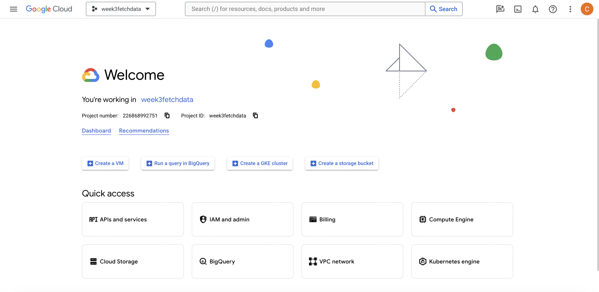
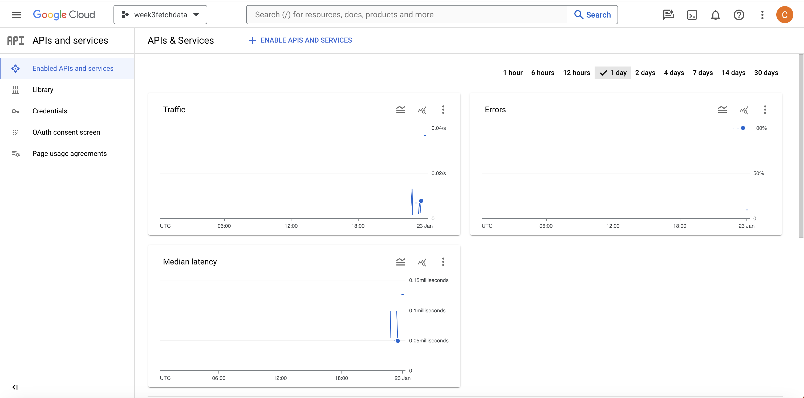

Data Fetching#
📘 Interactive Version: For a hands-on experience with this chapter’s content, access the interactive notebook in Google Colab. Week 3 materials can be found here. In this section, we will delve into the process of acquiring the dataset that has been integral to our analyses – the OLCI data from the Sentinel-3 satellite, part of the Copernicus Dataspace. This segment will guide you through the nuances of accessing this rich dataset, understanding its structure, and efficiently retrieving the data you need for your work.
Copernicus Data Space#
Overview
Copernicus Data Space is a cornerstone of the European Union’s Earth observation program, providing a wealth of data from the Sentinel satellites. Aimed at monitoring the Earth’s environment, it supports applications in areas like climate change, disaster response, and urban planning.
Key Features
Diverse Datasets: Offers imagery, atmospheric measurements, and climate indicators.
Accessibility: Data is freely accessible, fostering open science and research.
Resources
For more information and data access, visit the Copernicus Dataspace.
Google Earth Engine#
Overview
Google Earth Engine is a powerful platform for analyzing geospatial data at scale. It combines a multi-petabyte catalog of satellite imagery with cloud computing resources, enabling planetary-scale environmental data analysis.
Capabilities
Rich Data Catalog: Access to extensive satellite imagery and geospatial datasets.
Powerful Computing: Leverages Google’s cloud infrastructure for large-scale data processing.
Resources
Explore tutorials and community scripts at the Google Earth Engine’s official site.
For this notebook, we will use both Google Earth Engine and Copernicus Dataspace to help us to get the raw OLCI dataset.
Set up Accounts#
Before delving into the specifics of data retrieval, it’s crucial to ensure you have access to the necessary platforms. We’ll be working with two primary data sources: Google Earth Engine and Copernicus Dataspace.
Google Earth Engine: Most of you might already have a Google account. If so, you’re a step ahead! You can use the same account to access Google Earth Engine.
Copernicus Dataspace: Accessing data from the Copernicus Dataspace requires a separate registration. If you haven’t done so, please take a moment to create an account. Simply visit the Copernicus Dataspace registration page and follow the instructions to sign up.
Data Fetching Logic#
The process of data fetching is meticulously structured to ensure we efficiently retrieve accurate and comprehensive data. The logic underlying this process involves several key steps:
Area and Time Specification: Initially, we define the geographical scope and the specific time frame of interest. This precise specification allows us to target our data retrieval effectively.
Retrieving File Names from Google Earth Engine: Once the area and time parameters are set, we proceed to fetch a list of relevant file names from Google Earth Engine. This platform provides a robust interface for identifying datasets that match our specified criteria.
Converting to Copernicus Filename Format: After obtaining the list of file names from Google Earth Engine, the next step involves transforming these names into the format recognised by the Copernicus Dataspace. This conversion is crucial for ensuring compatibility and facilitating the subsequent data retrieval process.
Fetching Raw Data from Copernicus Dataspace: With the correctly formatted file names in hand, we then access the Copernicus Dataspace to retrieve the raw data. It’s important to note that Google Earth Engine does not provide raw data in the same format as the Copernicus Dataspace. Hence, this step is essential for obtaining the data in its native, unaltered format.
Step 0: Set Up#
Before we dive into the data fetching process, it’s essential to lay the groundwork by setting up the necessary packages and ensuring proper authentication. Follow these preparatory steps to create a smooth and efficient workflow:
Install Required Packages: Make sure all the necessary packages are installed in your working environment. This includes libraries specific to data handling, geospatial analysis, and any other tools relevant to your project. On Google Colab you don’t need to do this, but this is a commpn practice when you exceute the code on your local machine.
Authenticate with Google Earth Engine: Access to Google Earth Engine requires proper authentication. Ensure that you’re logged into your Google account and have followed the authentication procedures to obtain access to the datasets and tools offered by Google Earth Engine. On Google Colab, the authentication process is a bit different. You need to navigate to Google Cloud Console first to create a project there. You will see an interface like this:  You can see your project name and id here. Now, you need to click on ‘API and Service’ button on the interface. You will then see an interface like this:  You can then click on ‘Enable APIs and Services’ button, search for Google Earth Engine and enable it. Finally, you need to register the project you just created to Google Earth Engine. Please navigate to this page and follow the instructions there.
By completing these initial setup steps, you’re ensuring that your environment is ready and equipped with the tools needed for data fetching and analysis.
import numpy as np
from shapely.geometry import Polygon, Point
import ee
import requests
import pandas as pd
from datetime import datetime, timedelta
import subprocess
ee.Authenticate()
ee.Initialize()
To authorize access needed by Earth Engine, open the following URL in a web browser and follow the instructions:
The authorization workflow will generate a code, which you should paste in the box below.
Successfully saved authorization token.
Remember to replace ‘project_id’ with your actual project id.
Step 1: Read in Functions Needed#
To streamline our data fetching and processing, we’ll first load the essential functions. These functions are designed to handle various tasks such as data retrieval, format conversion, and preliminary data processing. Ensure that you’ve imported all the required functions before proceeding to the next steps of the workflow. All functions have docstrings so please read them to get some ideas of what they do.
def parse_gee_filename(gee_filename):
"""
Parses the Google Earth Engine filename to extract satellite name, sensing date, and start time.
Parameters:
gee_filename (str): Filename obtained from Google Earth Engine.
Returns:
tuple: Contains satellite name, sensing date, and start time.
"""
parts = gee_filename.split('_')
satellite = parts[0] + '_OL_1_EFR'
start_datetime = parts[1]
end_datetime = parts[2]
# Extract date from the start_datetime (assuming the format is like '20180601T014926')
sensing_date = start_datetime[:8]
start_time = start_datetime[9:]
return satellite, sensing_date, start_time
def get_access_token(username, password):
"""
Retrieves access token from Copernicus Dataspace using the provided credentials.
Parameters:
username (str): Username for Copernicus Dataspace.
password (str): Password for Copernicus Dataspace.
Returns:
str: Access token for authenticated sessions.
"""
url = 'https://identity.dataspace.copernicus.eu/auth/realms/CDSE/protocol/openid-connect/token'
data = {
'grant_type': 'password',
'username': username,
'password': password,
'client_id': 'cdse-public'
}
response = requests.post(url, data=data)
response.raise_for_status()
return response.json()['access_token']
def query_sentinel3_olci_data(satellite, sensing_date, start_time, token):
"""
Queries Sentinel-3 OLCI data from Copernicus Data Space based on satellite name, sensing date, and start time.
Parameters:
satellite (str): Name of the satellite.
sensing_date (str): Date of the data sensing.
start_time (str): Start time of the data sensing.
token (str): Access token for authentication.
Returns:
DataFrame: A DataFrame containing the query results with details about the Sentinel-3 OLCI data.
"""
# Convert sensing_date to datetime object and format it for the query
sensing_datetime = datetime.strptime(f'{sensing_date}T{start_time}', '%Y%m%dT%H%M%S')
sensing_datetime = sensing_datetime - timedelta(seconds=1)
# Construct the request URL using the filter structure provided
url = (
f"https://catalogue.dataspace.copernicus.eu/odata/v1/Products?"
f"$filter=contains(Name,'{satellite}') and "
f"ContentDate/Start ge {sensing_datetime.strftime('%Y-%m-%dT%H:%M:%S.000Z')} and "
f"ContentDate/Start le {(sensing_datetime + timedelta(days=1)).strftime('%Y-%m-%dT%H:%M:%S.000Z')}&"
f"$orderby=ContentDate/Start&$top=1000"
)
headers = {'Authorization': f'Bearer {token}'}
# Print the URL for debugging
print(url)
# Make the API request
response = requests.get(url, headers=headers)
# Check if the request was successful
if response.status_code != 200:
# Print error details and return an empty DataFrame if the request failed
print(f"Error: Unable to fetch data. Status Code: {response.status_code}. Response: {response.text}")
return pd.DataFrame()
# Convert the JSON response to a DataFrame
search_results_df = pd.DataFrame.from_dict(response.json()['value'])
# Convert the 'ContentDate/Start' to datetime objects and sort the results
search_results_df['SensingStart'] = pd.to_datetime(search_results_df['ContentDate'].apply(lambda x: x['Start']))
search_results_df.sort_values(by='SensingStart', inplace=True)
return search_results_df
def fetch_S3_images_by_area_and_date(date_range, spatial_extent, area_of_interest):
"""
Fetches Sentinel-3 OLCI images based on a specified date range and area of interest.
:param date_range: List containing the start and end dates (e.g., ['2018-06-01', '2018-06-02'])
:param spatial_extent: List containing the spatial extent [min_lon, min_lat, max_lon, max_lat]
:param area_of_interest: ee.Geometry object defining the specific area for which to fetch images
:return: List of dictionaries, each containing details about a fetched image, including its ID, date, and download URL.
"""
# Initialize the Earth Engine module
ee.Initialize()
# Define variables for Sentinel-3 OLCI query
S3_product = 'COPERNICUS/S3/OLCI'
# Query for Sentinel-3 data within the specified date range and area of interest
S3_collection = ee.ImageCollection(S3_product) \
.filterDate(date_range[0], date_range[1]) \
.filterBounds(area_of_interest)
# Convert S3_collection to a list of image IDs
S3_image_ids = S3_collection.aggregate_array('system:index').getInfo()
S3_images_info = S3_collection.getInfo()['features']
# Initialize an empty list to store details
S3_image_details = []
# Iterate through each image in the collection
for img_info in S3_images_info:
# Fetch image ID
image_id = img_info['id']
# Fetch image date and other properties as needed
image_date = img_info['properties']['system:time_start'] # Example property
# Append the details to the list
S3_image_details.append({
'id': image_id,
'date': image_date
})
return S3_image_details
def download_single_product(product_id, file_name, access_token, download_dir="downloaded_products"):
"""
Download a single product from the Copernicus Data Space.
:param product_id: The unique identifier for the product.
:param file_name: The name of the file to be downloaded.
:param access_token: The access token for authorization.
:param download_dir: The directory where the product will be saved.
"""
# Ensure the download directory exists
os.makedirs(download_dir, exist_ok=True)
# Construct the download URL
url = f"https://zipper.dataspace.copernicus.eu/odata/v1/Products({product_id})/$value"
# Set up the session and headers
headers = {"Authorization": f"Bearer {access_token}"}
session = requests.Session()
session.headers.update(headers)
# Perform the request
response = session.get(url, headers=headers, stream=True)
# Check if the request was successful
if response.status_code == 200:
# Define the path for the output file
output_file_path = os.path.join(download_dir, file_name + ".zip")
# Stream the content to a file
with open(output_file_path, "wb") as file:
for chunk in response.iter_content(chunk_size=8192):
if chunk:
file.write(chunk)
print(f"Downloaded: {output_file_path}")
else:
print(f"Failed to download product {product_id}. Status Code: {response.status_code}")
Step 2: Extract Filenames from Google Earth Engine#
Once you have set up your environment and are authenticated with Google Earth Engine, the next step is to extract the filenames that meet your specific criteria. This involves querying the Google Earth Engine datasets based on your area of interest, time frame, and any other relevant parameters. The code snippet below demonstrates how to perform this task effectively:
arctic_region_mask_line=np.loadtxt('region_mask_line.txt')
# Create a polygon object representing the Arctic Ocean boundary
boundary_polygon = Polygon(arctic_region_mask_line)
region_mask_line_tt = [(lon, lat) for lon, lat in arctic_region_mask_line]
area_of_interest = ee.Geometry.LineString(coords=region_mask_line_tt, proj='EPSG:4326', geodesic=True)
date_range = ['2018-06-01', '2018-06-02']
spatial_extent = [-180, 60, 180, 90] # Example coordinates
export_tasks = fetch_S3_images_by_area_and_date(date_range, spatial_extent, area_of_interest)
Step 3: Convert Google EE Filenames to Copernicus Format#
After retrieving the filenames from Google Earth Engine, the next crucial step is to convert these filenames into the format recognized by the Copernicus Dataspace. This conversion is essential for ensuring compatibility and enabling you to query and retrieve the corresponding datasets from Copernicus. Below is an example code snippet that demonstrates this conversion process. Note that you will need your username and password for the Copernicus Dataspace to authenticate and access the required data.
# Example GEE image ID
gee_image_id = 'S3B_20180601T182924_20180601T183224'
# Parse the GEE filename to get the date and time
satellite, sensing_date, start_time = parse_gee_filename(gee_image_id)
# Get access token for Copernicus Data Space (ensure your credentials are correct)
username = 'ucfbwc0@ucl.ac.uk'
password = 'Psos28633682Sosp~~~~'
token = get_access_token(username, password)
# Query the Copernicus Data Space for the corresponding Sentinel-3 OLCI data
s3_olci_data = query_sentinel3_olci_data(satellite, sensing_date, start_time, token)
# Print the results
print(s3_olci_data['Name'][0])
https://catalogue.dataspace.copernicus.eu/odata/v1/Products?$filter=contains(Name,'S3B_OL_1_EFR') and ContentDate/Start ge 2018-06-01T18:29:23.000Z and ContentDate/Start le 2018-06-02T18:29:23.000Z&$orderby=ContentDate/Start&$top=1000
S3B_OL_1_EFR____20180601T182924_20180601T183224_20200126T011400_0179_008_013_1260_MR1_R_NT_002.SEN3
After converting the filenames from Google Earth Engine format to Copernicus format and querying the Copernicus dataspace, you might receive multiple filenames in the response. Typically, the relevant filename you are looking for is the first one in the list. Here’s how you can access the desired filename and its unique id:
# Assuming s3_olci_data is a DataFrame or a dictionary containing the query results
# Print the first filename and id from the list, which is usually the one we want
print(s3_olci_data['Name'][0])
print(s3_olci_data['Id'][0])
Step 4: Download#
Once you have the correct filename in the Copernicus format, the final step is to download the data. This process involves authenticating with your Copernicus dataspace credentials and sending a request to download the specified file. Below is an example code snippet demonstrating how to perform the download. Ensure that your username and password are accurate and up-to-date to avoid any authentication issues.
username = ''
password = ''
token = get_access_token(username, password)
access_token = token # Replace with your actual access token
download_dir = "" # Replace with your desired download directory
product_id = s3_olci_data['Id'][0]
file_name = s3_olci_data['Name'][0]
# Download the single product
download_single_product(product_id, file_name, access_token, download_dir)
Until here, you should have the dataset downloaded in the directory you specified.